Sprint 4
Monotiratzacio conexio remota
Veurem el contingut del directori /var/log/, amb diversos fitxers de registre del sistema. 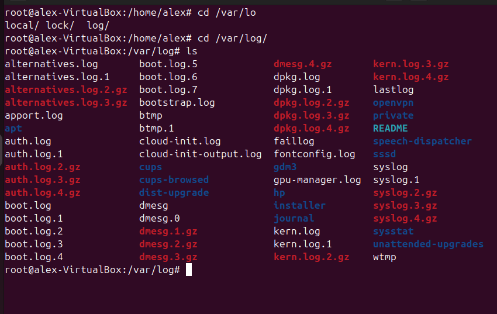
Editarem el fitxe etc/logrotate.conf, que defineix polítiques 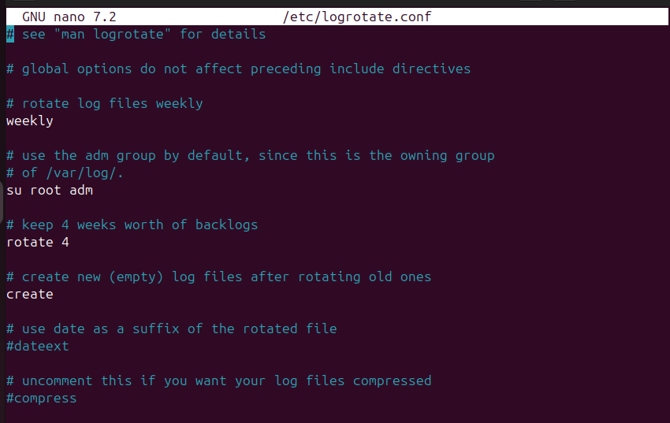
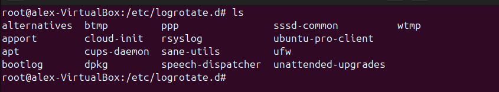
Enviament d'un missatge de registre amb logger 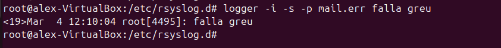
La verificació del log /var/log/mail.log

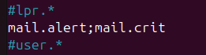
Administració Remota (TEAM VIEWER, VNC)
Team Viwer
Instal·lació a través de la pàgina web 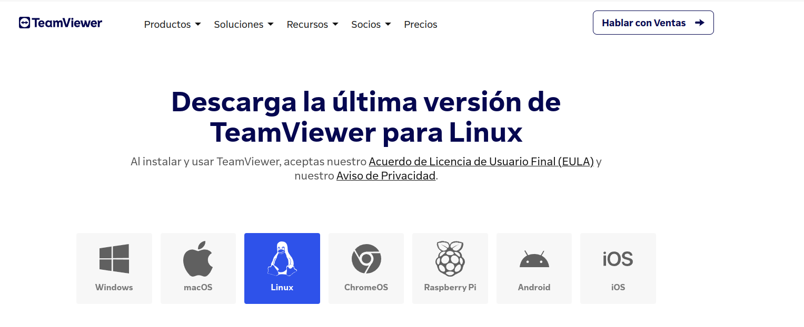 ID i contrasenya (Cal iniciar sessió en el controlador) 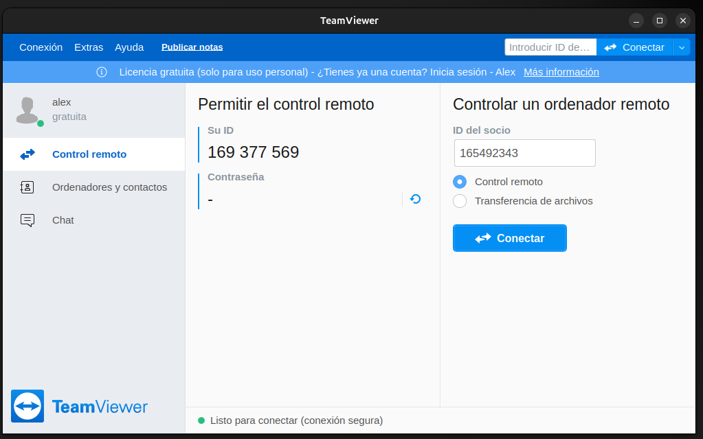 Poso la contrasenya del ordenador remot 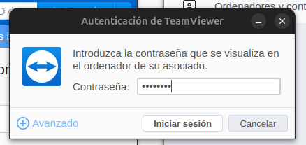 En el cas d'Ubuntu cada vegada que em connecto he de donar permís d'interacció remota 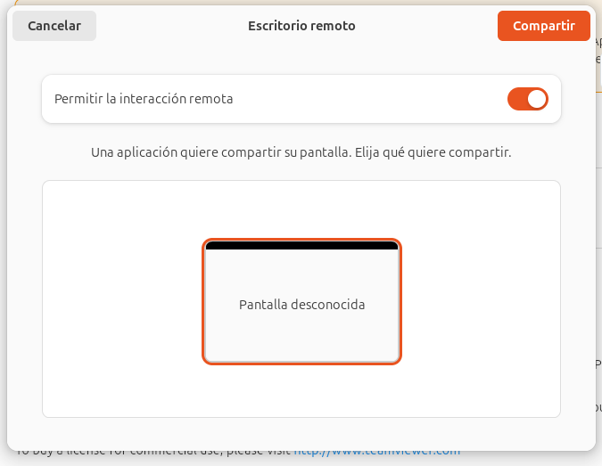 I finalment ja funciona se'n capaços de controlar el ordinador remot 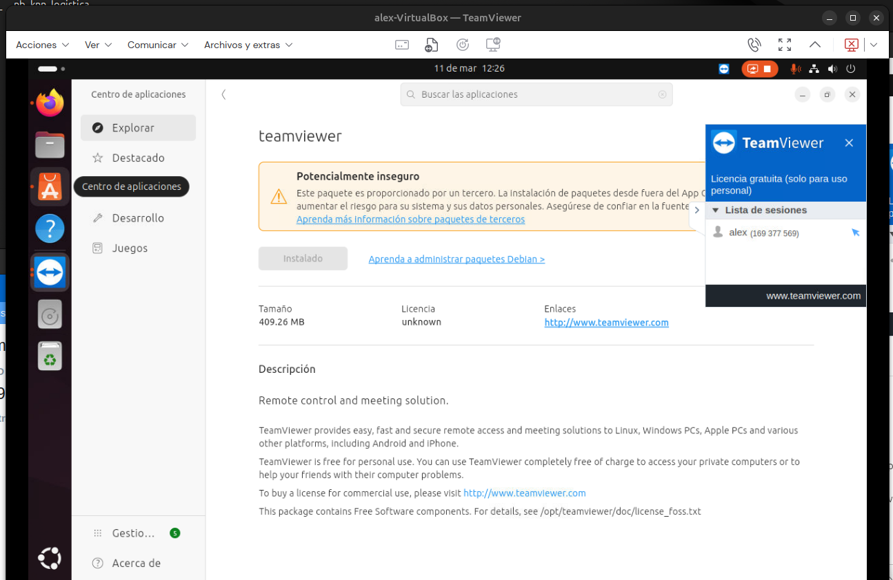
Llicenciament
Tipus de llicències
Les llicències de programari defineixen com es pot utilitzar, modificar i redistribuir el codi.
GPL (General Public License)
Llicència Pública General. Garanteix que el programari romangui lliure i qualsevol modificació també s’hagi de compartir amb la mateixa llicència.
LGPL (Lesser General Public License)
Llicència Pública General Menor. Similar a la GPL, però permet que llibreries lliures s’utilitzin en programari privatiu.
MPL (Mozilla Public License)
Llicència Pública de Mozilla. Llicència híbrida que permet combinar codi lliure amb propietari, però exigeix que les modificacions del codi original segueixin sent lliures.
BSD (Berkeley Software Distribution)
Distribució de Programari de Berkeley. Llicència permissiva que permet utilitzar el codi en projectes privats sense obligacions de compartir les modificacions.
Domini Públic
El programari és lliure de drets d'autor i es pot utilitzar, modificar i redistribuir sense restriccions.
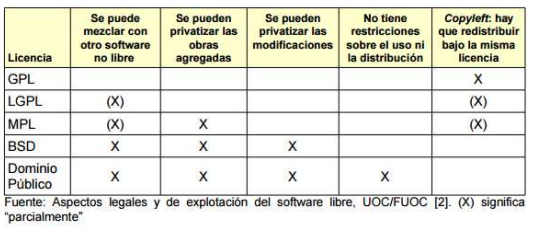
En el meu cas si estigues fent un projecte a nibell estudi i millora triaria BSD perquè ofereix màxima llibertat: permet reutilitzar el codi sense obligacions, fins i tot en programari privatiu. Això facilita la seva adopció per empreses i desenvolupadors. A més, només requereix crèdit a l’autor.